MultiDEC v3 : conception d'échafaudages de façade RETOTUB en 3D, décompte et amarrages.
Ce que fait MultiDEC v3 et ce qui change par rapport à la v2
MultiDEC conçoit des échafaudages de façade avec le matériel RETOTUB. À partir de quelques cotes (longueur de façade, largeur de maille, hauteur du dernier plancher…), il propose une structure conforme aux règles de montage de la notice technique : mailles, niveaux de plancher, accès, garde-corps, diagonales et amarrages.
La structure est ensuite ajustable maille par maille, puis dessinée en 3D avec les vrais blocs de la bibliothèque RETOTUB. Chaque bloc posé correspond à une référence produit : le décompte (quantités et poids) et la liste des amarrages sont donc toujours fidèles au dessin.
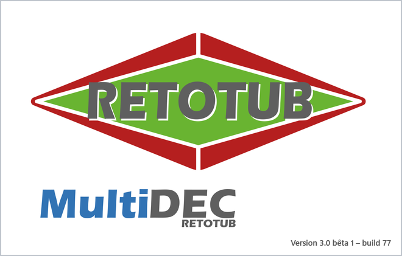
Les fichiers .mdc des versions précédentes ne s'ouvrent pas dans la v3 : les projets sont à ressaisir.
Installation, mises à jour, droits d'utilisation, bibliothèque de blocs
Lancer MultiDEC-v3-Setup-version.exe. L'installation ne demande pas de droits administrateur : MultiDEC s'installe dans le profil de l'utilisateur (%LOCALAPPDATA%\Programs\RETOTUB\MultiDEC v3), avec un raccourci dans le menu Démarrer (et sur le Bureau si la case est cochée). Les fichiers .mdc3 s'ouvrent ensuite d'un double-clic. Il faut Microsoft .NET Framework 4.8, présent sur Windows 10 et 11 : l'installateur prévient s'il manque. La désinstallation se fait depuis Paramètres › Applications de Windows.
Au démarrage, MultiDEC regarde si une version plus récente a été publiée et propose de l'installer. En répondant Oui, la nouvelle version est téléchargée et contrôlée, MultiDEC se ferme, s'installe et se relance : enregistrer son projet avant. Le menu Aide › Rechercher les mises à jour… fait la même vérification à la demande, et Aide › À propos de MultiDEC… donne la version installée, les dossiers utiles (installation, journal des erreurs) et les licences des composants tiers. Ce guide est livré avec MultiDEC : Aide › Guide utilisateur l'ouvre dans la visionneuse intégrée ; il est aussi publié sur le site RETOTUB avec chaque version. La recherche au démarrage se désactive dans les Paramètres par défaut (case Rechercher les mises à jour au démarrage).
Tant que l'installateur n'est pas signé numériquement, Windows SmartScreen ou un antivirus peuvent le bloquer ou demander confirmation (« Informations complémentaires › Exécuter quand même »). Si le blocage persiste, faire autoriser le fichier par l'administrateur du poste.
Chaque poste doit être autorisé par RETOTUB. Au démarrage, MultiDEC calcule le code du poste (16 caractères, par exemple K7QM-3XPA-W9DT-HN4C, tiré de l'identifiant de Windows et de la carte mère) puis consulte la liste des postes autorisés publiée par RETOTUB sur retotub.com.
Le menu Aide › Droits d'utilisation… affiche à tout moment le code du poste, la date de la dernière vérification et l'échéance du droit, et permet de revérifier.
Le code change si Windows est réinstallé ou si la carte mère est remplacée : il faut alors refaire une demande. Il ne change pas avec le disque, la mémoire ou la carte réseau. Une date de Windows reculée bloque le démarrage hors ligne : remettre la date à l'heure, ou connecter le poste.
MultiDEC dessine la structure en insérant des blocs 3D, un par référence produit (HMPOT20, HMLIS250, HMSOCREG…). Il lui faut donc une bibliothèque de blocs :
Les deux fichiers sont livrés avec l'installateur, dans le sous-dossier Bibliotheque du dossier d'installation : MultiDEC les charge au démarrage sans rien régler.
Les chemins utilisés sont dans Outils › Paramètres par défaut…, onglet Fichiers (voir chapitre 11) : lignes Bibliothèque de blocs et Catalogue multidec.bib, remplies avec les fichiers installés. Parcourir… choisit un autre fichier (.dwg ou .dxf pour la bibliothèque) ; il est chargé dès l'enregistrement des paramètres, sans relancer MultiDEC. Une ligne laissée vide reprend le fichier installé au démarrage suivant.
La barre d'état, en bas de la fenêtre, rappelle la bibliothèque chargée.
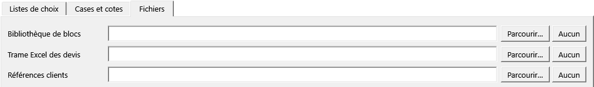
Si une référence calculée n'existe pas dans la bibliothèque, le bloc n'est pas dessiné et l'onglet Alertes donne la liste des blocs absents. Les tubes d'amarrage, qui manquent encore dans la bibliothèque, sont représentés provisoirement par un cercle barré d'une croix.
Une seule fenêtre : saisie à gauche, dessin à droite, grilles en bas
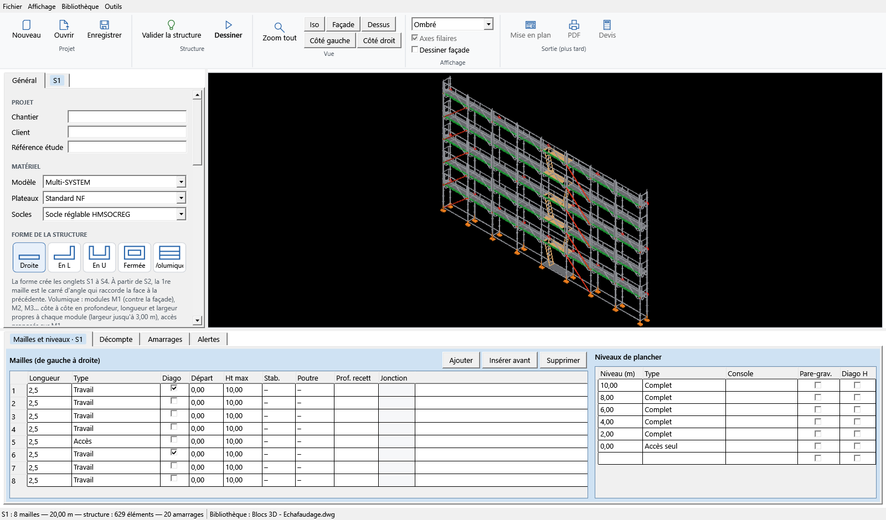
1 2 3 4 5 6MultiDEC écrit les nombres avec le séparateur décimal réglé dans Windows sur le poste (« , » ou « . ») : écrans, messages, plans, cartouche et liste du matériel. À la saisie, les touches « , » et « . » sont acceptées toutes les deux dans les champs de cotes ; ce guide est écrit avec la virgule.
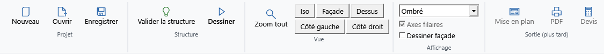
| Groupe | Commandes |
|---|---|
| Projet | Nouveau, Ouvrir, Enregistrer un projet .mdc3. Le menu Fichier > Exporter le modèle… enregistre le dessin 3D dans un format de VectorDraw. |
| Ouvrages | + Façade, + Tour escalier alu, Supprimer l'ouvrage ouvert (chapitre 13). |
| Structure | Valider la structure : recalcule la proposition de la face active (le voyant passe au vert). Dessiner : génère toute la structure en 3D, le décompte et les amarrages. |
| Vue | Zoom tout et les vues normalisées : Iso, Façade, Dessus, Côté gauche, Côté droit. |
| Affichage | Mode de rendu (Filaire, Lignes cachées, Ombré, Ombré + arêtes, Réaliste), axes filaires (toujours affichés), case Dessiner façade pour représenter le mur du bâtiment. |
| Sortie | Mise en plan, PDF et Devis : prévus dans une prochaine version (grisés). |
De la page blanche au décompte
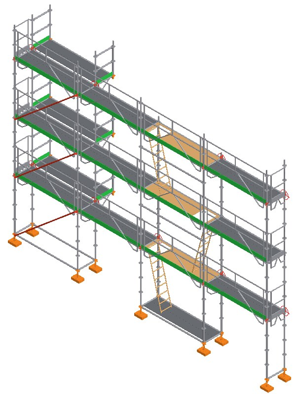
La proposition automatique n'écrase jamais les réglages faits à la main dans les grilles, sauf si l'on clique à nouveau sur Valider la structure. Ordre conseillé : régler d'abord les cotes, valider, puis affiner les grilles.
Les réglages communs à toute la structure
Chantier, Client et Référence étude identifient le projet. La référence étude sert de nom proposé à l'enregistrement.
Une structure sur roues est une tour à 4 pieds : une seule maille, structure droite, largeur de 1,00 m au moins. Le dernier plancher et la longueur dépendent de la largeur :
| Largeur | Dernier plancher maxi | Longueur mini |
|---|---|---|
| 1,00 et 1,05 m | 2 m | 1,50 m |
| 1,50 m | 4 m | 1,50 m |
| 2,00 m | 6 m | 2,00 m |
| 2,50 m | 8 m | 2,50 m |
| 3,00 m | 10 m | 3,00 m |
Hors de ces règles, MultiDEC dit ce qui ne va pas, rappelle la règle et ne dessine pas. Sur roues : protection intérieure posée d'office, diagonales en travers aux abouts, pas d'amarrage. L'option Grutable est elle aussi réservée aux structures à 4 pieds.
Pour chaque côté, la protection et la plinthe :
Protections proposées : Sans, MDS 2, Lisses, Garde-corps d'about. La plinthe se règle seule selon la protection choisie (MDS 2 → bois, lisses → axée, sans → sans), puis reste modifiable. Un about de plus de 1,05 m (modules volumiques larges) est toujours protégé par des lisses, et un garde-corps de plus de 1,05 m passe en lisses là où une lisse porte des plateaux (damier), car il serait dans le même plan ; une alerte le signale. Les cases About gauche et About droit décident si les bouts de la structure sont protégés. En L, en U ou fermée, il n'y a pas d'about aux raccords entre faces.
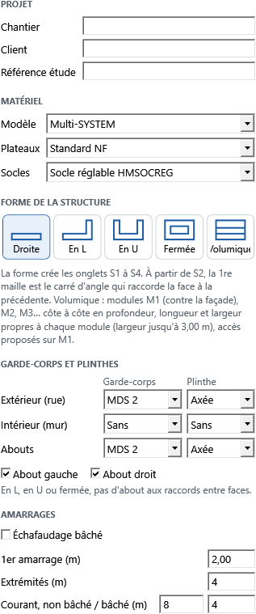
Les cinq boutons créent les onglets de faces. À partir de S2, la première maille de chaque face est le carré d'angle qui la raccorde à la face précédente : la longueur saisie pour S2, S3… ne l'inclut pas. Toutes les faces doivent avoir leur premier plancher à la même hauteur, sinon la structure n'est pas dessinée et un message l'indique.
| Forme | Faces |
|---|---|
| Droite | Une face, S1. |
| En L | S1 et S2 en équerre. |
| En U | S1, S2 et S3. |
| Fermée | S1 à S4, le tour complet du bâtiment. |
| Volumique | Modules M1 (contre la façade), M2, M3… côte à côte en profondeur, chacun avec sa longueur et sa largeur (jusqu'à 3,00 m). |
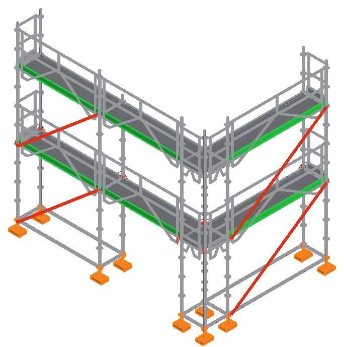
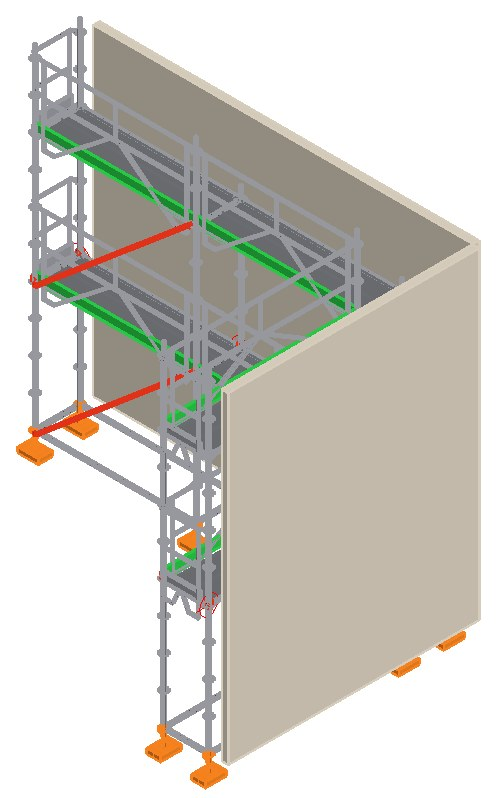
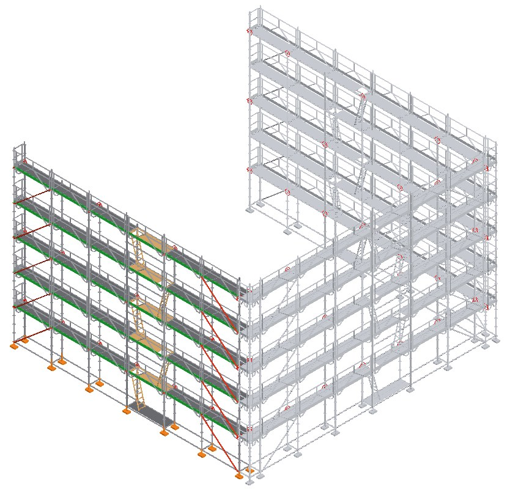
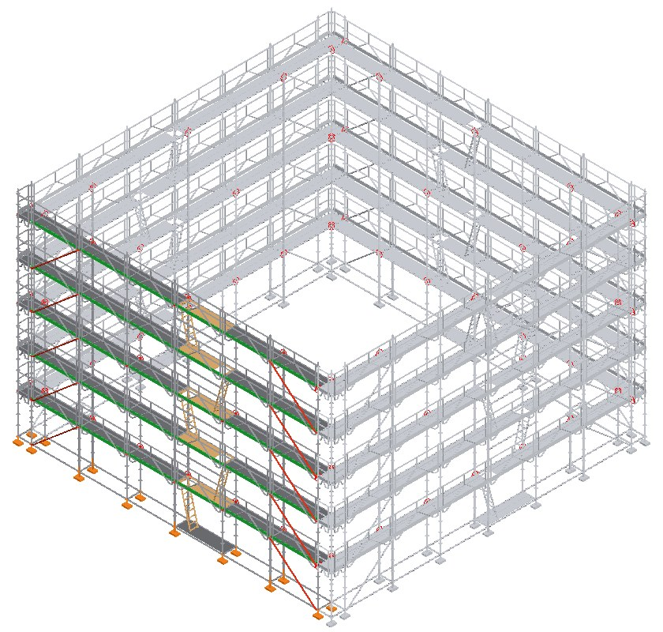
En L, en U ou fermée, la case Inverser la structure (bâtiment dans l'angle rentrant) fait tourner les faces dans l'autre sens. Chaque face garde son côté mur côté bâtiment : garde-corps, escaliers, appro et sous-mailles rapportées passent de l'autre côté du dessin.
Le nombre de modules se choisit dans la liste Modules ; + Module ajoute un module derrière le dernier (jusqu'à 12), avec les mêmes mailles que M1 mais sans accès.
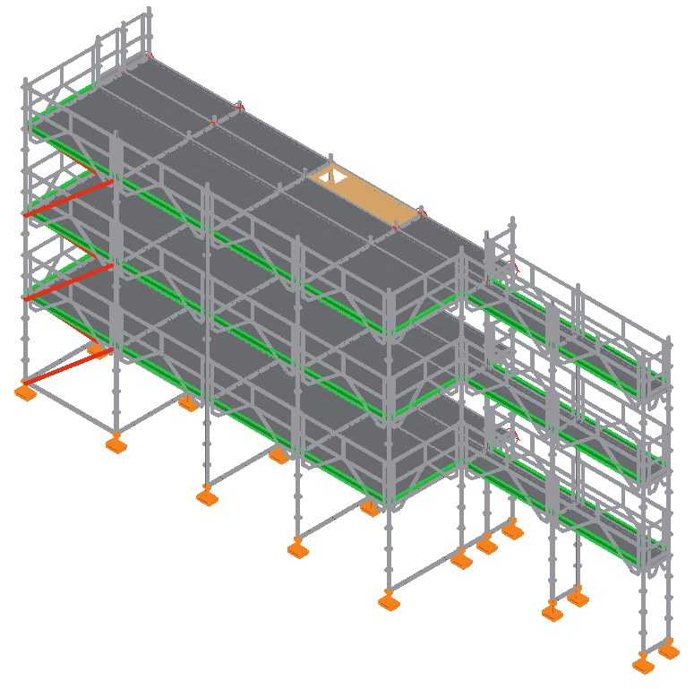
Les amarrages sont calculés pour toutes les files de poteaux, en quinconce entre files voisines, et placés sur le dessin.
| Réglage | Rôle (valeurs par défaut) |
|---|---|
| Échafaudage bâché | Resserre l'espacement courant et le contrôle de surface (1 ancrage pour 10 m² au lieu de 24 m²). |
| 1er amarrage (m) | Hauteur du premier amarrage (2,00 m). |
| Extrémités (m) | Espacement vertical sur les files d'extrémité (4 m). |
| Courant, non bâché / bâché (m) | Espacement vertical sur les files courantes (8 m / 4 m). |
Au-delà de 24 m de hauteur, une alerte rappelle que la note de calcul est obligatoire ; elle est recommandée dès que l'échafaudage est bâché.
S1 à S4 (ou M1, M2… en volumique) : cotes et options de la face
| Champ | Rôle |
|---|---|
| Longueur souhaitée | Longueur visée ; MultiDEC la compose avec des mailles standard (0,70 à 3,00 m). |
| Largeur de maille | Distance entre file intérieure et file extérieure (0,70 / 0,75 / 1,00 / 1,05 m). |
| Maille préférée | Longueur des mailles courantes et des mailles d'accès (1,50 m au moins pour un accès). |
| Nombre d'accès | Proposé à chaque changement de longueur (un accès tous les 20 m), puis modifiable. |
| Dernier plancher | Hauteur du plancher le plus haut ; les niveaux sont proposés tous les 2 m en dessous. |
| Distance à la façade | Écart entre la file intérieure et le mur (0,20 m maximum en usage courant). |
La ligne grisée sous les champs résume la proposition : longueur obtenue, nombre de mailles et de niveaux, hauteur totale.
Le bouton Valider la structure (aussi dans le ruban) recalcule les mailles et les niveaux de la face.
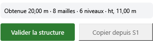
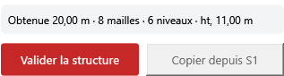
Le bouton passe au rouge si la longueur, la largeur, la maille préférée, le nombre d'accès, le dernier plancher, le carré d'angle ou la forme ont changé. Dessiner refuse alors de dessiner et ouvre l'onglet de la première face à valider. Les modifications faites à la main dans les grilles, elles, ne font pas passer le bouton au rouge.
Copier depuis S1 (faces S2 et suivantes) recopie dans la face active les réglages de la face S1.
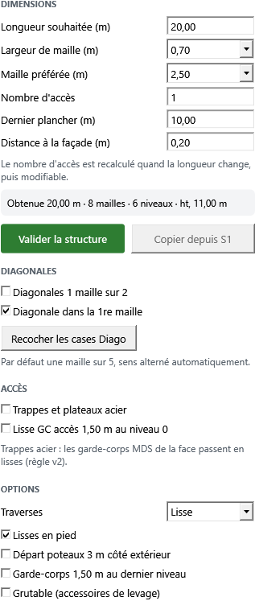
Les diagonales verticales occupent toute la hauteur des mailles cochées dans la colonne Diago de la grille. Par défaut, une maille sur cinq est cochée, et le sens alterne automatiquement d'une maille cochée à la suivante.
Les diagonales sont posées côté extérieur ; si une protection intérieure est choisie, elles sont aussi posées côté intérieur, sur les mêmes mailles. Pas de diagonale sur un côté sans protection.
La maille juste avant et la maille juste après une poutre de franchissement reçoivent toujours des diagonales, même si leur case n'est pas cochée (voir 8.6).
Toute lisse de 1,50 m ou plus qui porte des plateaux est une lisse renforcée (HMLISR150 à HMLISR300) : traverses des modules volumiques larges, plateaux en damier, platelage de lest.
| Option | Effet |
|---|---|
| Traverses | Type des traverses aux planchers complets : Lisse, Renforcé ; Poutrelle ou Poutre au-delà de 1,05 m de largeur (volumique). |
| Lisses en pied | Lisses au niveau 0 des deux côtés de chaque maille. |
| Départ poteaux 3 m côté extérieur | Poteaux de 3 m en pied sur la file extérieure et les files d'extrémité, pour décaler les jonctions. |
| Garde-corps 1,50 m au dernier niveau | Protection couvreur : lisse supplémentaire à 1,50 m au-dessus du dernier plancher. |
| Grutable | Accessoires de levage : support HMSUPSUNI au pied des poteaux, vis et écrous à la place des goupilles. |
Les deux grilles éditables de l'onglet du bas
L'onglet Mailles et niveaux · S1 montre la face active ; sa couleur reprend celle de la face sur le dessin ( S1 bleu, S2 vert, S3 pêche, S4 lavande).
Une ligne par maille, de gauche à droite en regardant la façade depuis la rue. Ajouter insère une maille après la maille sélectionnée (à la fin sinon), Insérer avant la place avant, Supprimer la retire.
| Colonne | Rôle |
|---|---|
| Longueur | 0,70 à 3,00 m (1,50 m au moins pour un accès). |
| Type | Travail, Accès, Travail + accès rapporté, + appro, + recette, + escalier 1,50, + demi-escalier 0,70 ou 1,00 (chapitre 8). |
| Diago | Diagonales verticales sur toute la hauteur de la maille. |
| Départ | Hauteur de pied de la maille, par pas de 0,50 m : sol en pente ou obstacle. |
| Ht max | Dernier plancher de la maille, si elle s'arrête plus bas ou monte plus haut que la face (écart multiple de 2 m). |
| Stab. | Distance d'une stabilisation (file supplémentaire côté extérieur). |
| Lest | Avec une stabilisation : platelage de lest à 0,50 m (8.3). |
| Poutre | Hauteur du plancher porté par une poutre de franchissement (sur la maille de gauche de la paire). |
| Prof. recette | Profondeur de la recette pour une maille « Travail + recette ». |
| Jonction | Information : carré d'angle ou jonction avec un module voisin (non modifiable). |
| ConXm, PareGravXm | Une colonne par niveau à console ou à pare-gravois : cochée, la maille reçoit la console ou le pare-gravois à ce niveau. |
Une ligne par niveau de plancher, du haut vers le bas, tous les 2 m ; le niveau 0 est en « accès seul ».
| Colonne | Rôle |
|---|---|
| Niveau (m) | Hauteur du plancher. La dernière ligne vide permet d'ajouter un niveau (par exemple un premier plancher à 1 m). |
| Type | Complet (plancher sur toutes les mailles de travail) ou Accès seul (plancher dans les mailles d'accès, lisses ailleurs). |
| Console | Référence de la console posée à ce niveau ; la colonne ConXm apparaît alors dans la grille des mailles, cochée partout. |
| Pare-grav., Diago H, Appro, Recette | Pare-gravois à ce niveau (ajoute la colonne PareGravXm) ; diagonales horizontales ; niveau desservi par les appro ou les recettes (colonnes visibles seulement si une telle maille existe). |
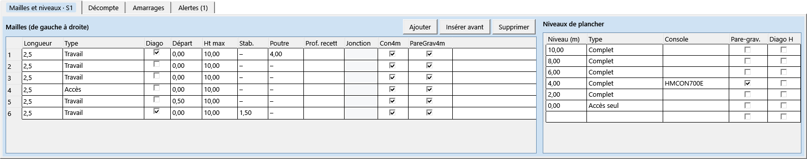
Ce que donnent les réglages des grilles sur l'échafaudage
Choisir une console dans la colonne Console d'un niveau complet, puis décocher dans la colonne ConXm les mailles qui n'en ont pas besoin. La liste ne propose que les consoles du modèle retenu et gardées dans les Paramètres par défaut.
D'un clic droit sur un about dans le dessin, le menu Remplacer l'about par propose une autre protection, un déport en console ou le retour aux paramètres. Le déport pose deux consoles, leurs poteaux, une lisse de pied, des plateaux et des garde-corps en lisses avec plinthes. Le choix est enregistré dans le projet.
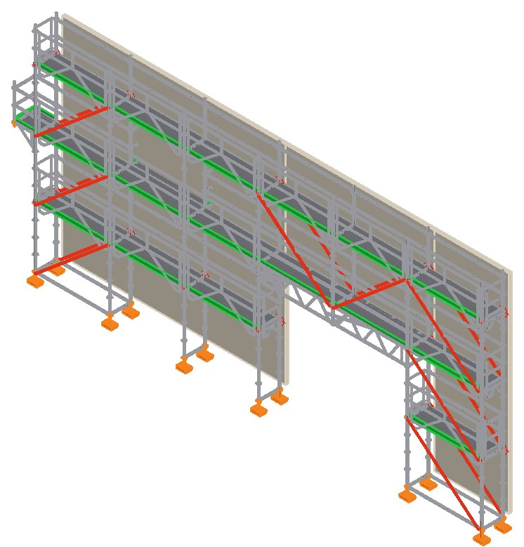
Cocher Pare-grav. dans la grille des niveaux : consoles de pare-gravois, tôles inclinées tous les 0,80 m, crochets et lisses sont posés sur les mailles cochées dans la colonne PareGravXm (toutes à la création).
L'exemple ci-contre montre aussi les trappes et plateaux acier et le portillon d'about posé quand le premier plancher est à 1 m.
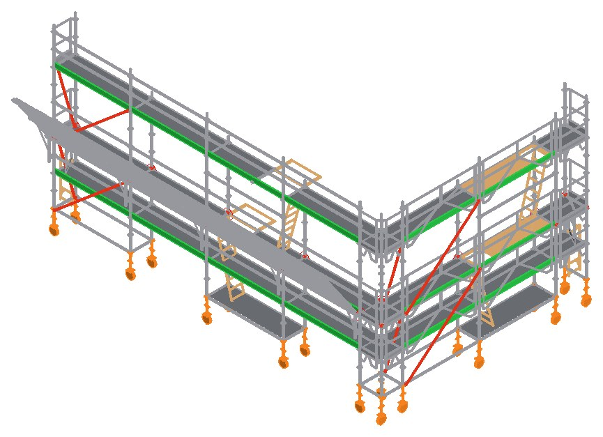
Les types « Travail + … » ajoutent une sous-maille côté extérieur, portée par une file de poteaux supplémentaire :
Aux niveaux desservis, la maille principale n'a pas de garde-corps extérieur. Si aucun niveau n'est coché, une alerte le signale.
La sous-maille monte toujours jusqu'à la hauteur max de sa maille (colonne Ht max), y compris quand la maille dépasse le dernier plancher de la face.
La colonne Stab. ajoute une stabilisation : une file à la distance choisie, reliée par des lisses et des diagonales jusqu'à 2 m sous le dernier plancher. La case Lest de la maille ajoute un platelage à 0,50 m entre la file extérieure et la file de stabilisation, pour y poser du lest : plateaux de la longueur de la maille, sur lisses porteuses (renforcées à partir de 1,50 m de profondeur). Les diagonales en travers intermédiaires de la première levée sont alors supprimées, car elles traverseraient les plateaux ; celles des abouts de la stabilisation restent.
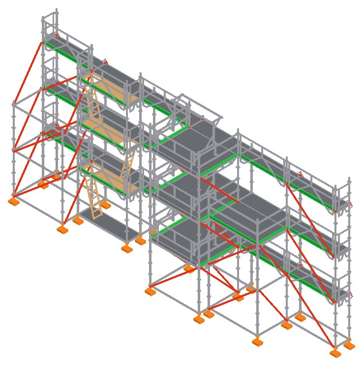
Trois types de maille (mailles de 2,50 ou 3,00 m) ajoutent une tour d'escalier côté extérieur :
La tour reçoit ses traverses renforcées, lisses, plinthes et diagonales ; côté maille, le garde-corps est remplacé par une fermeture ouverte au bout d'arrivée. Volées et garde-corps de volée sont dessinés en bleu.
Avec un premier plancher à 1 m, la première volée sort de la tour sur la maille voisine, pied au sol.
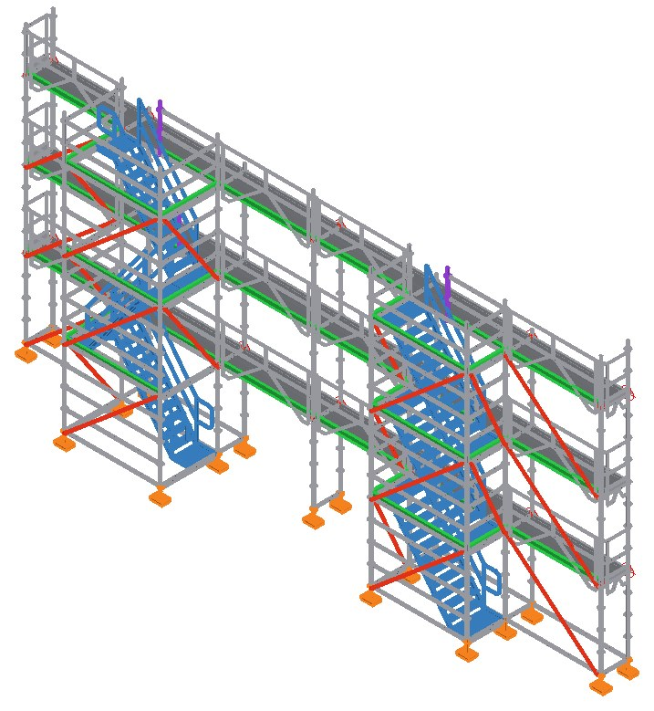
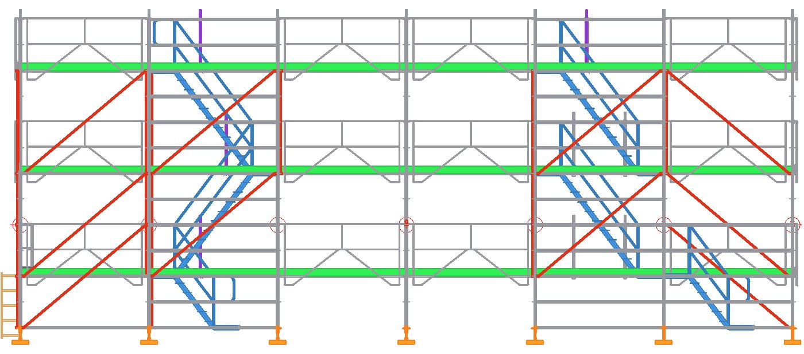
La colonne Ht max donne le dernier plancher de chaque maille. Plus bas que la face : la maille s'arrête. Plus haut : des planchers sont ajoutés tous les 2 m (pignon, cage d'ascenseur…).
Les abouts reçoivent leurs garde-corps du côté de la voisine plus basse, et une maille qui dépasse ses voisines a un plateau à trappe à chaque plancher qu'aucune voisine n'atteint. Un écart qui n'est pas un multiple de 2 m est refusé avec une alerte.
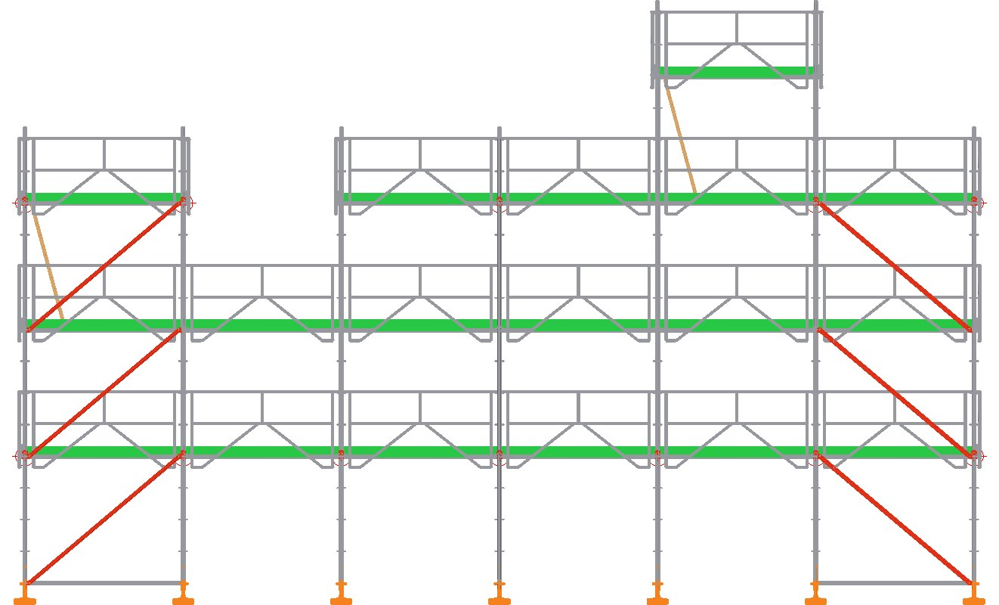
Pour enjamber un passage, saisir dans la colonne Poutre la hauteur du plancher porté, sur la maille de gauche d'une paire de mailles de travail identiques.
MultiDEC pose deux poutres 0,50 m sous ce plancher, supprime la file du milieu en dessous, ajoute les tubes en diagonale horizontale, les diagonales en V au-dessus et les abouts sur les mailles voisines. La maille d'avant et celle d'après reçoivent des diagonales verticales d'office, côté extérieur et, s'il y a une protection intérieure, côté intérieur. Si les conditions ne sont pas réunies (par exemple sur la première ou la dernière maille), la poutre est ignorée et une alerte l'explique.
Avec Dessiner façade, le mur laisse un passage sous la poutre.
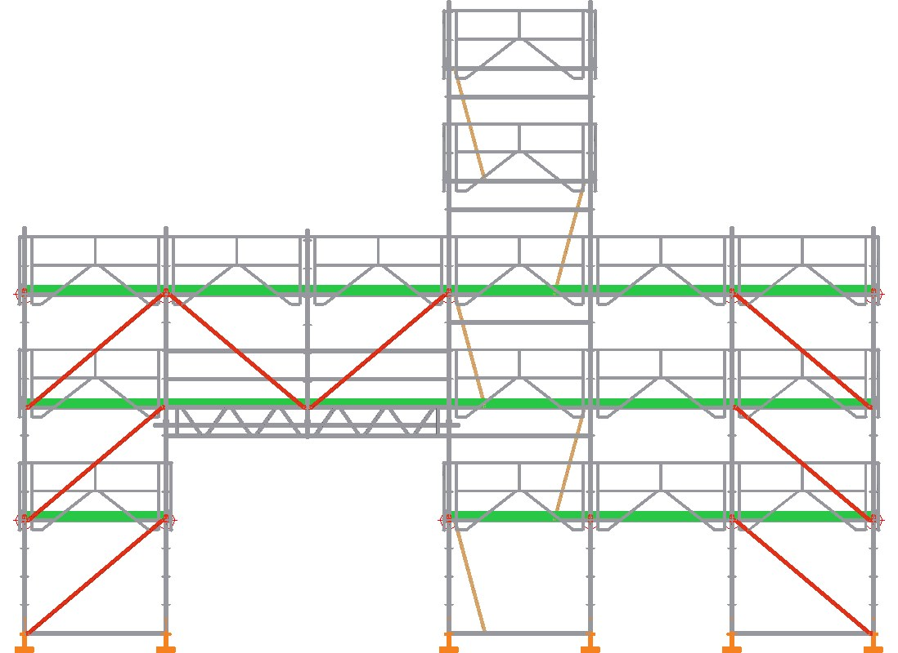
La colonne Départ donne la hauteur du pied de chaque maille, par pas de 0,50 m. Une file part du plus bas départ de ses deux mailles ; rien n'est posé sous le départ (planchers, traverses, diagonales, amarrages).
Le départ est ignoré, avec une alerte, sur une maille à sous-maille rapportée, à escalier, à stabilisation ou à poutre.
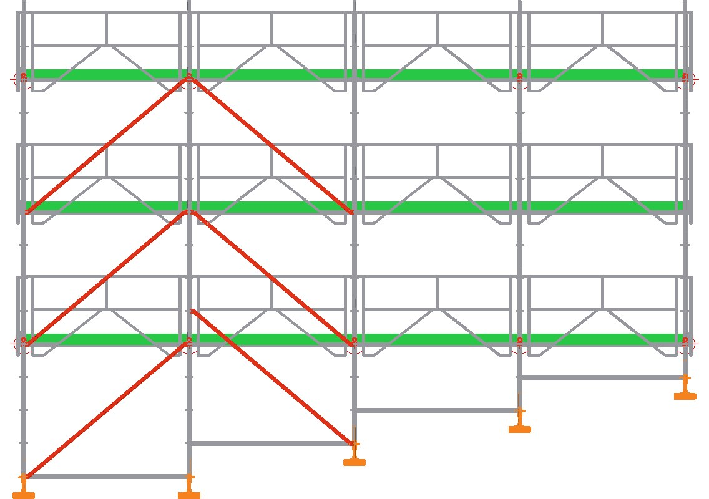
Chaque amarrage comprend un tube d'amarrage (le plus court couvrant la largeur, la distance à la façade et 10 cm), deux colliers fixes dessinés sur les poteaux, un piton EZPITON12 et une cheville EZCHEVILLE14 (ces deux derniers dans le décompte seulement). Sur le dessin, les amarrages apparaissent sous la forme d'un cercle barré d'une croix, en attendant les blocs définitifs.
La case Dessiner façade du ruban dessine le mur du bâtiment à la distance à la façade de la file intérieure, aussi haut que l'échafaudage. Les murs de deux faces voisines se raccordent dans l'angle, sortant ou rentrant. Le mur est recalculé à chaque dessin.
Une console ne traverse pas le mur : derrière une maille à consoles, le mur est renfoncé et reste à la distance à la façade du bout de la console. Si la maille a des consoles à tous ses niveaux, le renfoncement occupe toute la hauteur du mur ; sinon il va de 0,10 m sous le point le plus bas de la console à 2 m au-dessus de son plancher.
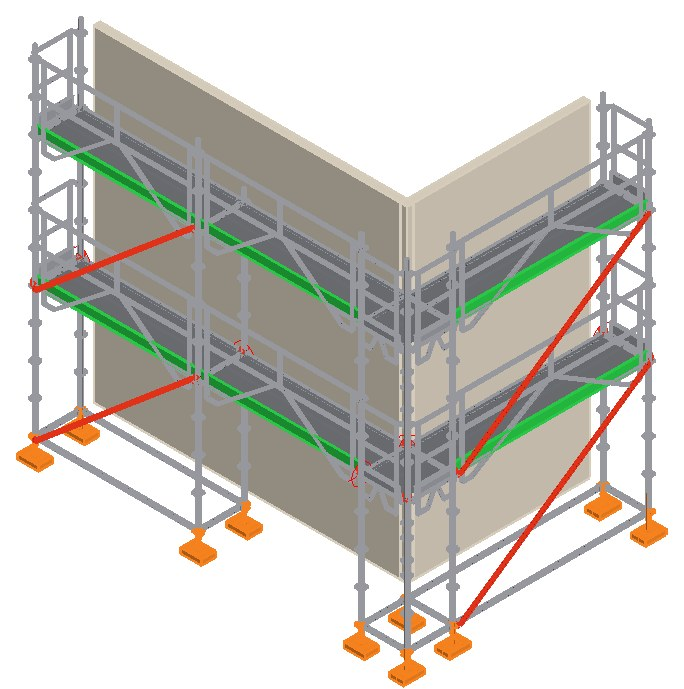
Dessiner, regarder, corriger
Dessiner génère toutes les faces, met à jour le décompte, la liste des amarrages et les alertes. Si une face est à valider (bouton rouge), le dessin est refusé et l'onglet de cette face s'ouvre.
| Commande | Effet |
|---|---|
| Remplacer l'about par | Visible sur un about ou un déport : autre protection, déport en console (liste des consoles compatibles) ou retour aux paramètres. Le dessin est refait aussitôt. |
| Supprimer la sélection | Retire les blocs sélectionnés ; le décompte suit. Les pièces supprimées sont enregistrées avec le projet et restent retirées à chaque Dessiner (une alerte en donne le nombre). |
| Rétablir les pièces supprimées (N) | Visible quand des pièces ont été supprimées : les remet toutes et refait le dessin. |
| Zoom tout | Recadre toute la structure. |
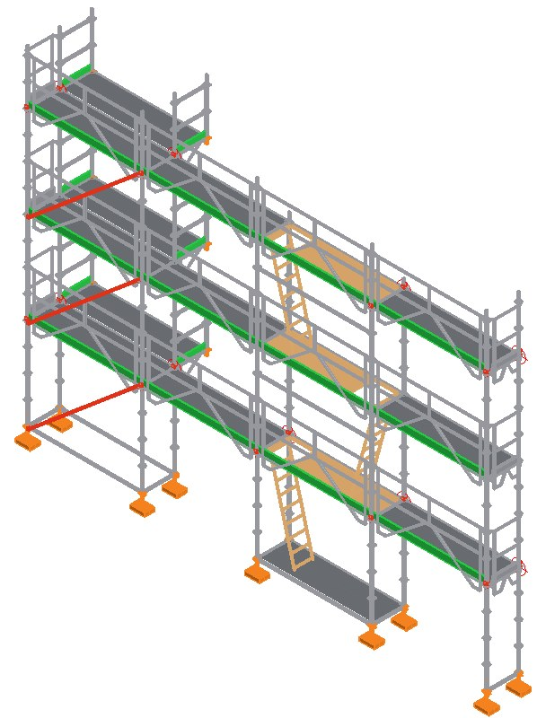
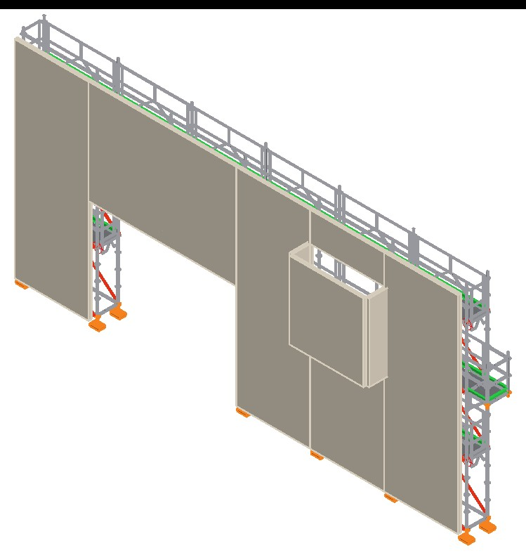
Les résultats du dessin
Une ligne par référence : famille, référence, désignation, quantité, poids unitaire et poids total. Désignations, poids et ordre de classement viennent du fichier multidec.bib. Le total (références, pièces, poids) est rappelé sous le tableau.
Les modifications sont enregistrées avec le projet (.mdc3) et conservées quand on redessine : une quantité modifiée reste imposée même si le dessin change. Le total sous le tableau indique combien de quantités ont été modifiées et de références ajoutées.
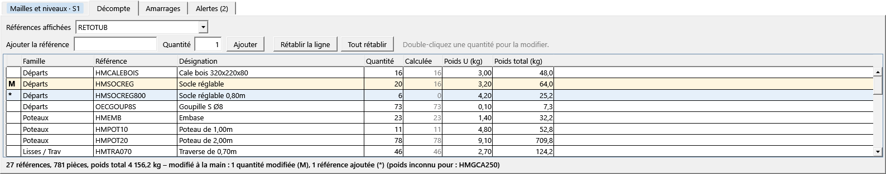
La liste Références affichées, en haut de l'onglet, choisit les références du décompte :
En références client, la colonne Réf. RETOTUB s'affiche à côté de la référence du client. Une pièce sans équivalent garde sa référence RETOTUB ; la liste de ces pièces est rappelée sous le tableau. Le choix par défaut se règle dans les Paramètres par défaut, onglet Fichiers (Références affichées).
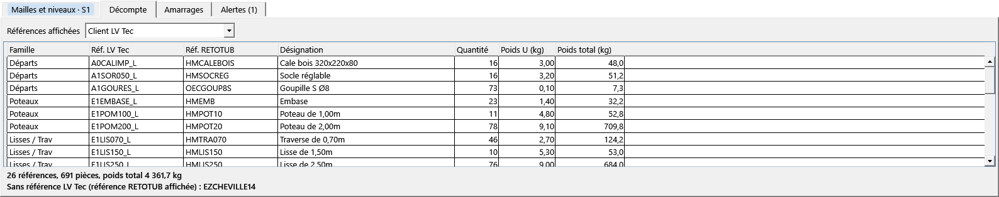
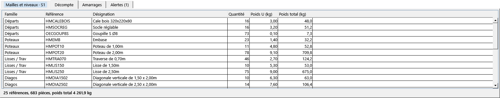
La position de chaque amarrage : face, numéro de file, abscisse dans la face et hauteur. Leur nombre est aussi affiché dans la barre d'état.
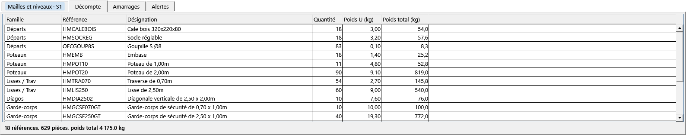
L'onglet indique entre parenthèses le nombre d'alertes. On y trouve les réglages ignorés (poutre impossible, départ sur une maille qui ne l'accepte pas…), les blocs absents de la bibliothèque et les conseils de sécurité (note de calcul, diagonales renforcées…).
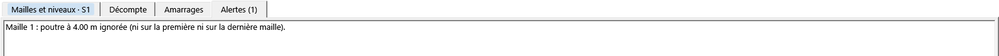
Consulter les alertes après chaque dessin : un réglage ignoré n'empêche pas le dessin, mais il n'apparaît pas sur la structure.
Menu Outils › Paramètres par défaut…
Ces réglages sont propres à chaque utilisateur Windows. Ils s'appliquent à chaque Nouveau et à l'ouverture du programme.
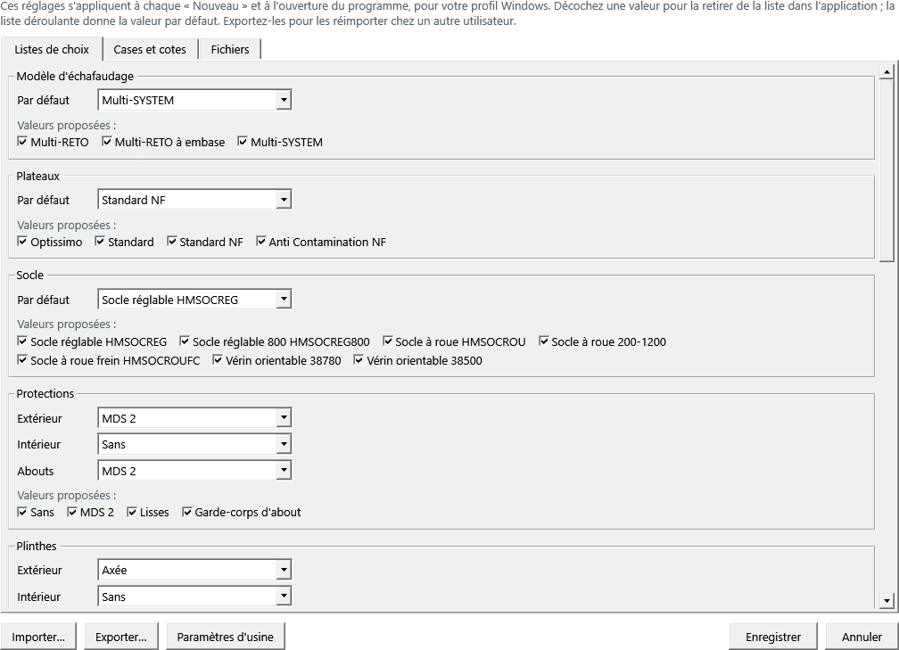
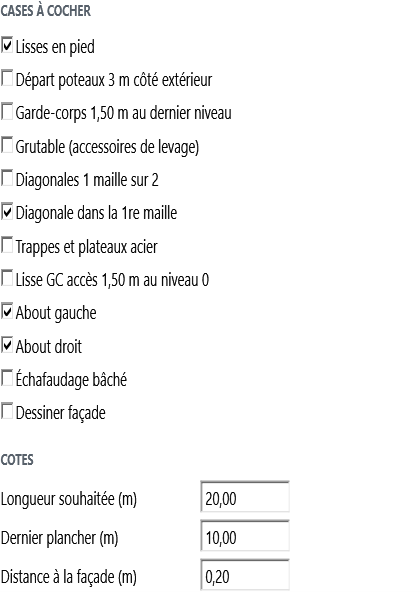
Plans A3 cotés en PDF, affichés dans MultiDEC
Bouton Mise en plan du ruban (groupe Sortie). MultiDEC redessine la structure, compose les feuilles, écrit un PDF et l'ouvre dans sa visionneuse intégrée. Toutes les faces doivent être validées (aucun bouton rouge). Aucune installation n'est nécessaire : la visionneuse utilise le moteur PDF de Chrome (PDFium), livré avec MultiDEC.
Dans la visionneuse :
Toutes les feuilles sont au format A3 paysage. Les vues sont dessinées en couleur comme à l'écran et cotées en mètres, à une échelle normalisée (1/50, 1/75, 1/100…) indiquée sous chaque vue.
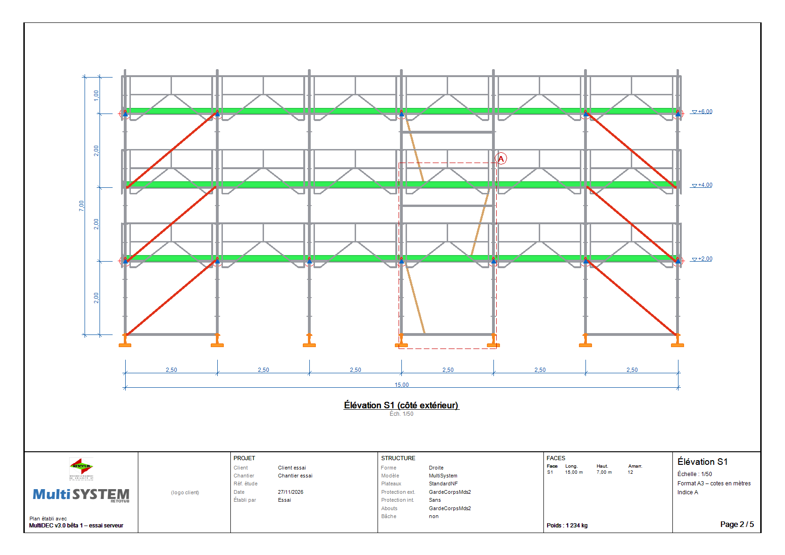
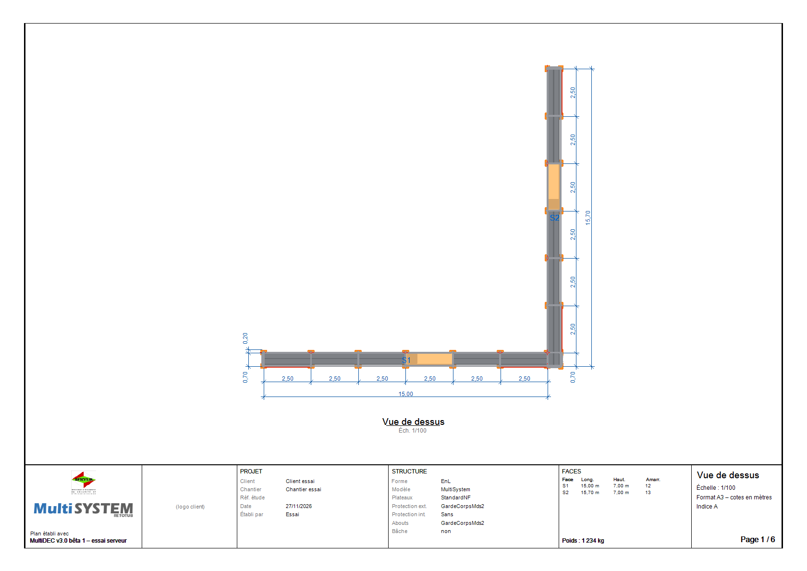
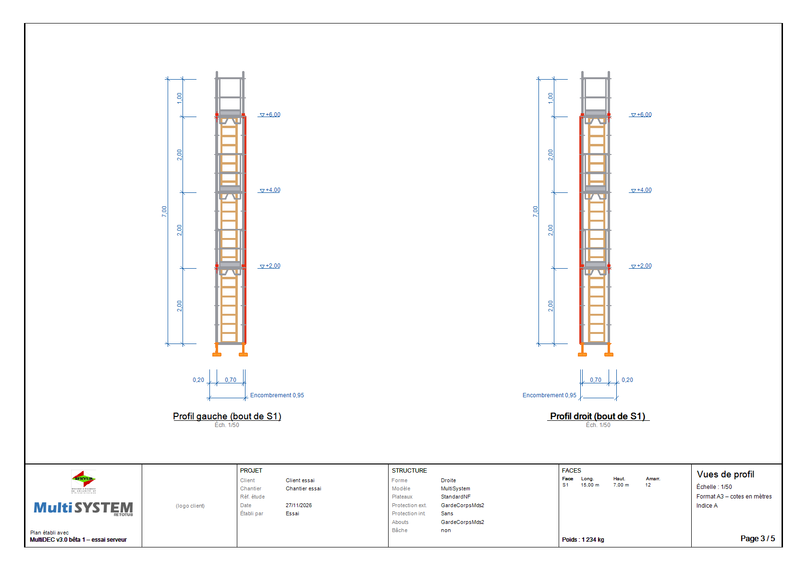
Bouton Liste matériel du ruban (groupe Sortie) : le décompte en PDF A4 portrait, ouvert dans la même visionneuse (enregistrement proposé sous « Liste matériel - chantier.pdf »).
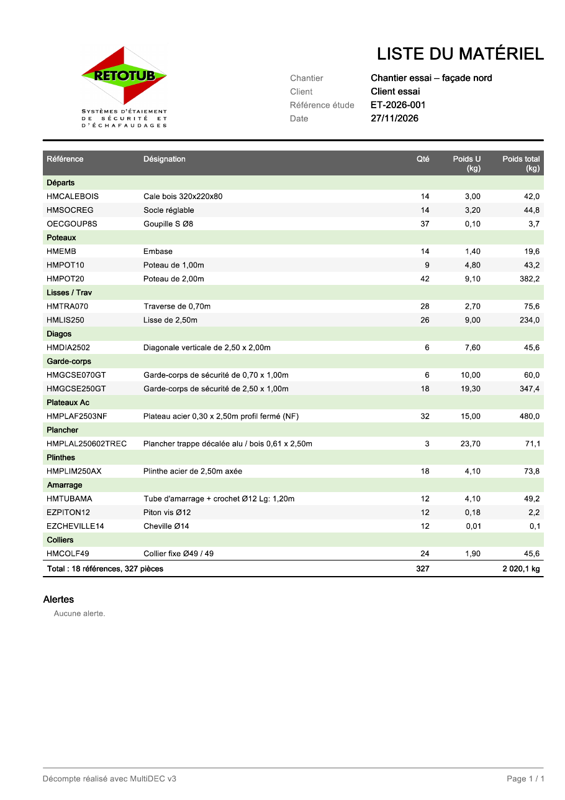
Le PDF de travail est écrit dans le dossier temporaire de Windows (%TEMP%\MultiDEC\Plans). Pour le garder, utilisez Enregistrer sous….
Plusieurs ouvrages dans un projet : la façade et des tours escalier à volées alu
Un projet peut contenir la façade (onglets S1, S2…) et jusqu'à neuf tours escalier à volées aluminium (onglets T1, T2…, en jaune, après les faces). Au bouton Nouveau, MultiDEC demande le premier ouvrage : échafaudage de façade ou tour escalier alu. Ensuite, le groupe Ouvrages du ruban permet :
La tour escalier limon arrivera plus tard (bouton grisé).
Les côtés de la tour : A côté bâtiment ou façade, C côté opposé, B et D les deux bouts.
Sortie en acrotère, tours de 3,00 m et tour escalier limon.
Enregistrer, ouvrir, et ce qui arrive ensuite
Un projet MultiDEC v3 est un fichier .mdc3. Il contient les réglages du projet, des faces, les grilles éditées à la main, les abouts remplacés et les pièces supprimées au clic droit : tout ce qu'il faut pour retrouver le même modèle 3D. Enregistrer sous… propose la référence étude comme nom de fichier. À l'ouverture, le modèle est redessiné automatiquement avec le décompte et les amarrages (si toutes les faces sont validées).
Fichier > Exporter le modèle… enregistre le dessin affiché dans un fichier autonome, lisible sans MultiDEC : DWG et DXF (version AutoCAD au choix), PDF, DGN, STL, images PNG/EMF, ou formats VectorDraw (VDML, VDCL). Seuls les blocs utilisés par le modèle sont exportés, pas toute la bibliothèque (un DWG de façade pèse moins de 1 Mo). Le SVG, proposé par VectorDraw, ne contient pas les volumes 3D.